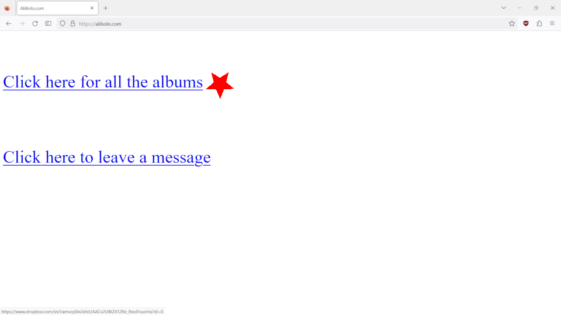
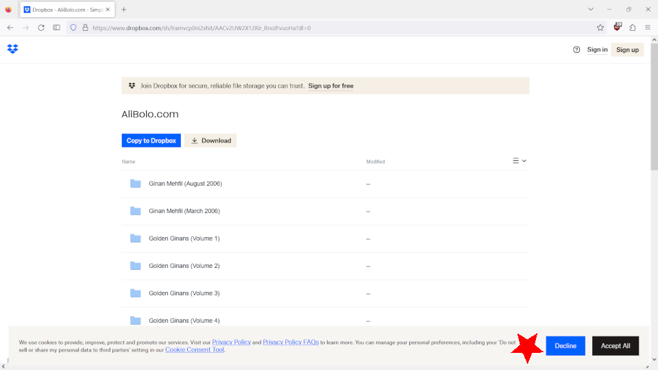
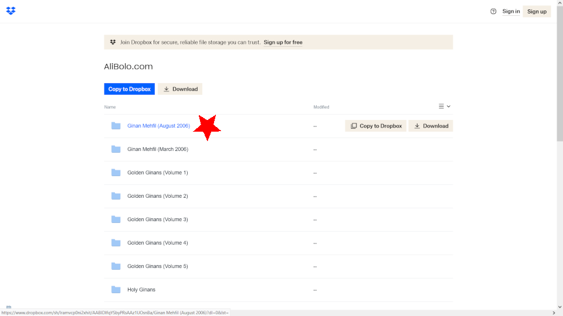
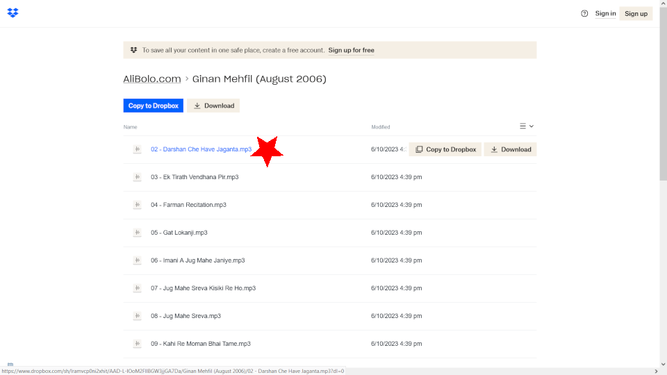
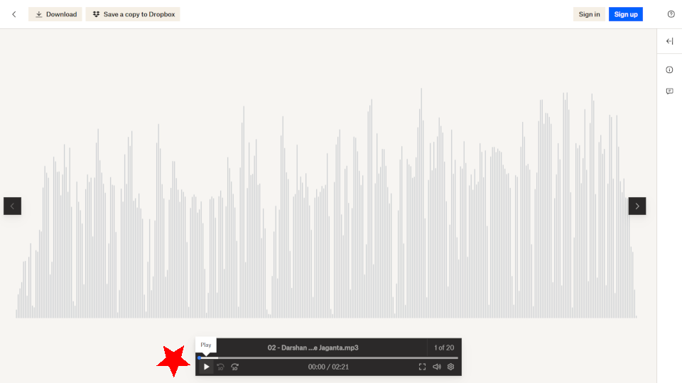
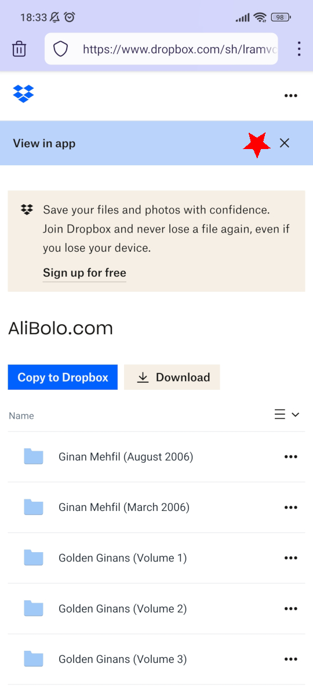
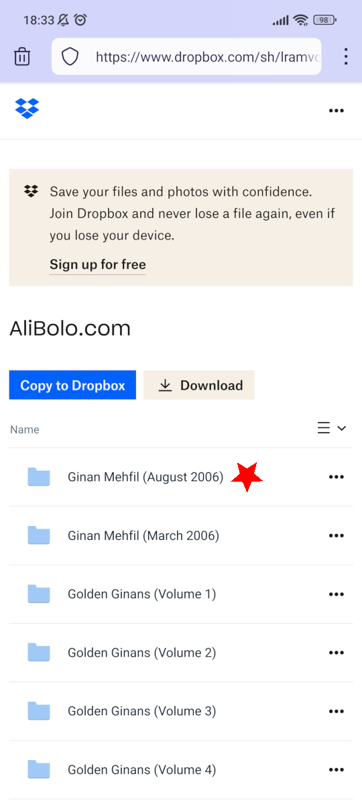
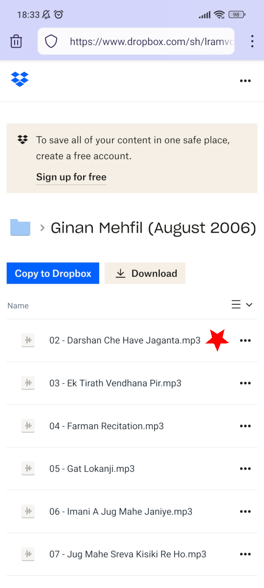
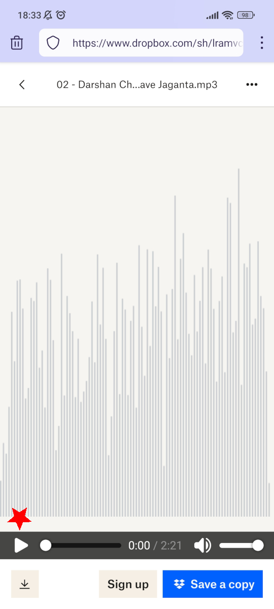

How to access all the albums on your computer
1. Click on the first link

2. Click on "Decline"

3. Click on album name

4. Click on track name

5. Click on play icon

How to access all the albums on your phone
1. Tap on the first link
2. Tap on "Decline"
3. Tap on cross
4. Tap on cross

5. Tap on album name

6. Tap on track name

7. Tap on play icon
